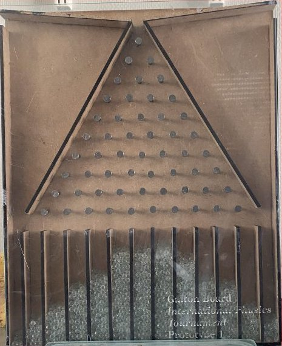
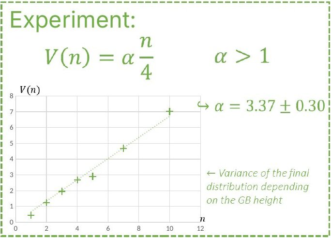
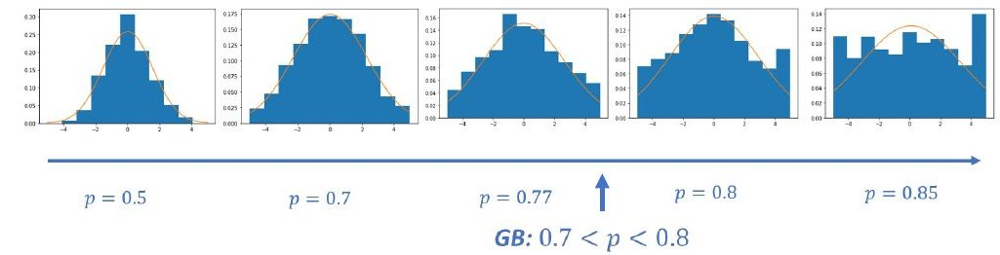
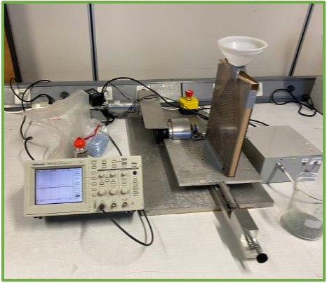
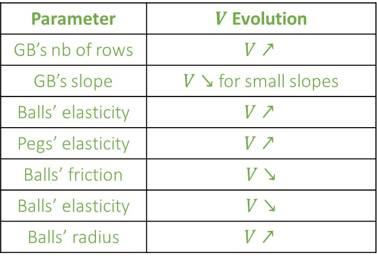
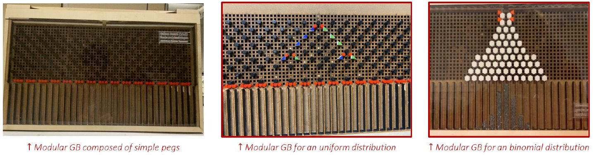
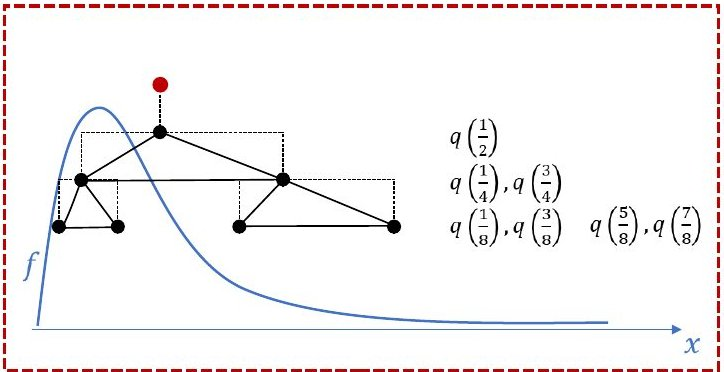
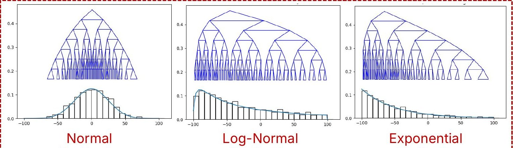

The questionDropping beads on a board with evenly spaced pegs is said to give a binomial distribution. Can other distributions be produced by changing things like the size of the pegs, their layout or the shape of the beads? Can a distribution that does not obey the central limit theorem be reached when the beads are independent and identical? What happens when the board vibrates?
A Galton board is a vertical board with rows of pegs and a row of bins at the bottom. A bead dropped at the top hits one peg per row. If each bounce were a fair coin flip, left or right, the beads would pile up in a binomial distribution, the bell shape seen in textbooks.
A simple test is the spread of the pile, measured by its variance (the average squared distance from the center, counted in bins). For a fair coin flip at each of n rows, the variance is n/4. On our wooden board it still grew in proportion to n, but 3.37 ± 0.30 times faster. Our beads spread much more than coin flips would.

Our first board. Glass beads fall through a triangle of pegs into the bins.

Measured variance against the number of rows. A fair coin flip would give n/4. Ours is 3.37 times larger.
A bead that has just gone right tends to go right again at the next peg. A model from the literature (Mat Daud, 2014) captures this with one number, p, the probability that a bead keeps its direction at a peg. For a fair coin flip p = 0.5. A larger p multiplies the variance by p/(1 − p).
We estimated p in three ways on our board: from the variance (0.77 ± 0.15), from how often a bead keeps its direction from one peg to the next (0.79 ± 0.20), and from the longest run without a change of direction (0.77 ± 0.20). A physics simulation of the board with up to 30 rows gave 0.76 ± 0.10.

With experiments and simulations we checked which physical parameters matter. More rows, bouncier pegs and bigger beads widen the pile. More friction on the beads narrows it.
We also shook the board sideways at a chosen frequency. With small beads the spread grew with the frequency. With big beads it shrank.

The shaking setup. The board, fed by a funnel, is shaken sideways at a chosen frequency.

How each parameter changes the variance V (arrow up: wider pile, arrow down: narrower pile), as listed in our slides.
To test the shape and layout of the pegs, we built a modular board: a panel with a grid of holes, into which pegs of different shapes can be plugged. With hexagonal pegs laid out in a triangle, the board gave back the textbook variance n/4. Another layout, with triangular pegs, was designed to spread the beads evenly over all the bins (a uniform distribution).

The central limit theorem says that adding up many independent random steps of similar size gives a bell curve. The question asked whether independent, identical beads can still pile up in another shape. They can.
We followed a construction by Proschan and Rosenthal (2010). Every peg still splits the beads 50/50. The pegs are placed at the points that cut the target curve into halves, then quarters, then eighths, and so on. We wrote a Python program where one draws any curve with the mouse and gets the matching board. Simulated boards gave normal (bell-shaped), log-normal and exponential piles. With the right parameters, a Galton board can serve as a physical generator of random numbers that follow any chosen distribution.

The construction. The first peg sits at the point that splits the target curve in two halves, q(1/2), the next pegs at the quarter points, then the eighths.
Our program. A target curve is drawn with the mouse, and the program builds the board for it.
